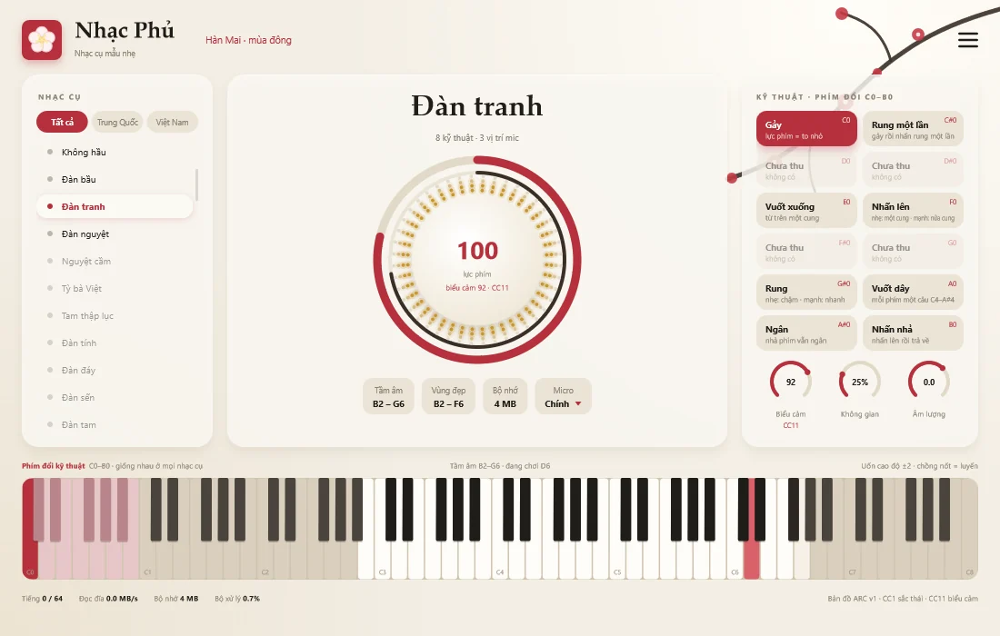
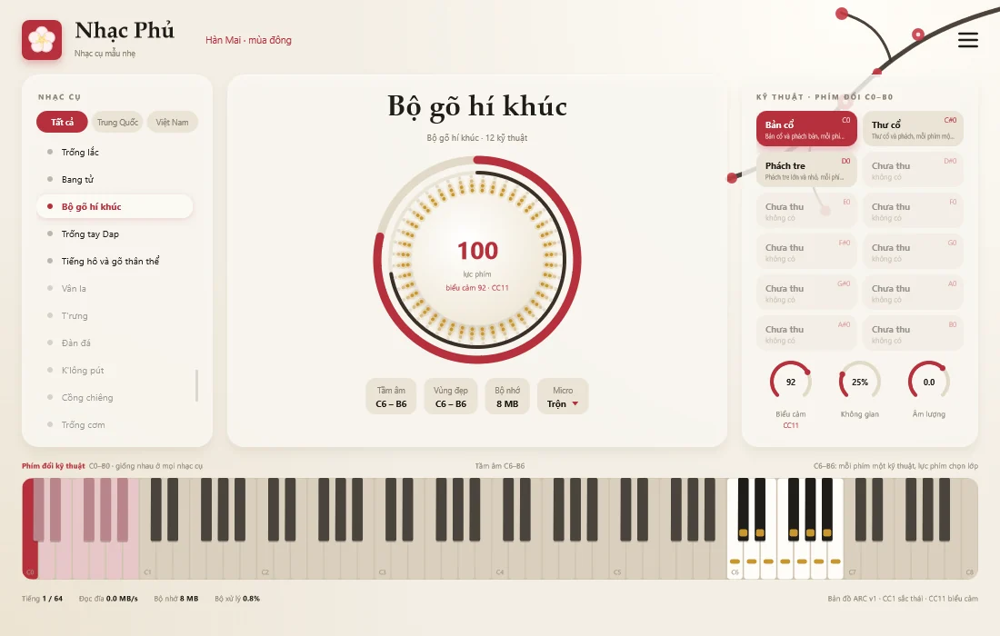

AuraLink Studio / Nhạc Phủ
Bản 1.0 · Windows · VST3Nhạc cụ dân tộc Trung Quốc và Việt Nam —
trong một trình cắm.
Sáu mươi nhạc cụ, từ cổ tranh, tỳ bà, nhị hồ, động tiêu đến đàn tranh, đàn bầu, sáo trúc, cùng cả dàn trống, chiêng và chũm chọe. Viết nốt bình thường là đã nghe như người chơi thật: tiếng luyến, vuốt, rung, vê và tiếng ngân của dây đều có sẵn trong nhạc cụ.

Một trình cắm, cả một dàn nhạc dân tộc.
Mọi nhạc cụ dùng chung một bộ điều khiển gọn và một cách chơi, nên đổi từ nhị hồ sang sáo hay từ cổ tranh sang đàn tranh không phải học lại.
- 60 nhạc cụ, bốn họ12 đàn gảy và đàn gõ dây, 6 đàn kéo, 13 nhạc cụ thổi và 29 nhạc cụ gõ. Chọn trong danh sách, lọc theo Trung Quốc hay Việt Nam.
- Một sơ đồ phím đổi kỹ thuậtMười hai phím C0–B0 chọn kỹ thuật ở mọi nhạc cụ, và cùng loại kỹ thuật nằm trên cùng một phím: bè viết cho nhị hồ chuyển sang cao hồ hay sáo vẫn chơi được.
- Luyến thu thật, đúng pháchChồng hai nốt lên nhau là thành tiếng luyến hoặc tiếng vuốt. Nhạc Phủ đọc trước một chút để tiếng luyến rơi đúng phách khi phát lại; chơi trực tiếp thì tắt đọc trước để đàn đáp ngay.
- Sắc thái bằng CC1Đàn kéo và nhạc cụ thổi lấy độ to và màu âm từ CC1, như cây vĩ hay làn hơi của người chơi. CC2 và CC21 chỉnh độ sâu và tốc độ rung, CC5 chỉnh thời gian vuốt.
- Nhẹ bộ nhớ, tới năm vị trí microBản thu nằm trên đĩa, chỉ phần đầu mỗi âm được giữ trong bộ nhớ: một nhạc cụ chỉ chiếm vài MB đến vài chục MB. Chọn micro trộn, gần, chính, trên cao hoặc phòng.
- Mười sáu bè trong một bảnỞ chế độ nhiều bè, một bản Nhạc Phủ chứa tới 16 nhạc cụ, mỗi bè một kênh MIDI, như một dàn nhạc nhỏ trong một trình cắm.
Đàn tranh, đàn bầu, đàn nguyệt, sáo trúc, sáo mèo — và còn nữa.
Năm nhạc cụ Việt Nam đã có trong bản 1.0. Sáo trúc là thư viện đầy đủ nhất của Nhạc Phủ, với năm vị trí micro và tiếng luyến thu thật giữa các nốt. Nhiều nhạc cụ Việt Nam khác đang được làm tiếp: những tên còn mờ trong danh sách là phần sắp tới.

Mỗi ngôn ngữ một giao diện.
Tiếng Việt, tiếng Anh hoặc tiếng Trung, mỗi lúc chỉ một ngôn ngữ. Giao diện tự đổi theo ngôn ngữ, hoặc bạn tự chọn trong trình đơn.


Mỗi phím một cách đánh.
Trống, chiêng, chũm chọe, mõ và bộ gõ hí khúc. Sơ đồ phím hiện ngay trên bàn phím; lực phím là độ mạnh của nhát đánh, và trên nhiều phím, lực 127 là một cách đánh khác như vê hay đánh đúp. Mỗi họ có vùng phím riêng nên xếp chồng được trên cùng một kênh.

Chưa định giá, vẫn đang làm tiếp.
Nhạc Phủ đang được phát triển tiếp, nhất là các nhạc cụ Việt Nam: thu mẫu từ nghệ nhân và hạ tầng đều cần kinh phí. Hiện Nhạc Phủ dành cho anh em producer và người quen; mỗi đơn có hai suất kích hoạt cho hai máy tính. Muốn dùng và ủng hộ, hãy viết cho chúng tôi.